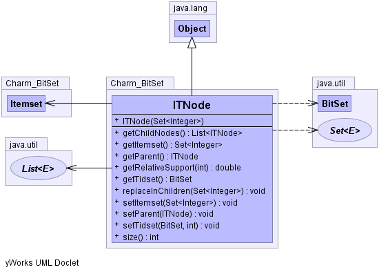

public class ITNode
extends java.lang.Object
This class represents an ITNode
Copyright (c) 2008-2012 Philippe Fournier-Viger
This file is part of the SPMF DATA MINING SOFTWARE
(http://www.philippe-fournier-viger.com/spmf).
SPMF is free software: you can redistribute it and/or modify
it under the terms of the GNU General Public License as published by
the Free Software Foundation, either version 3 of the License, or
(at your option) any later version.
SPMF is distributed in the hope that it will be useful,
but WITHOUT ANY WARRANTY; without even the implied warranty of
MERCHANTABILITY or FITNESS FOR A PARTICULAR PURPOSE. See the
GNU General Public License for more details.
You should have received a copy of the GNU General Public License
along with SPMF. If not, see .
-
-
